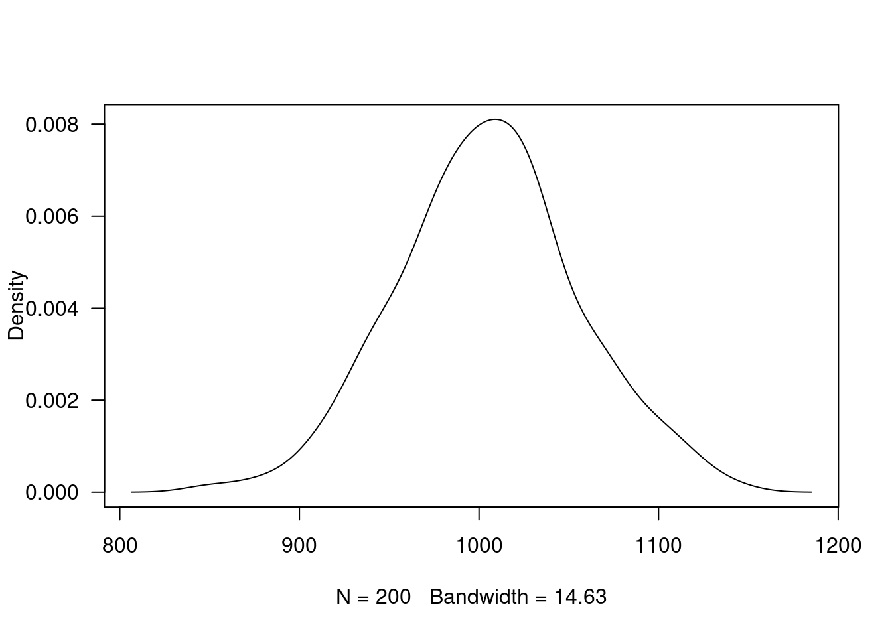

Pruebas de hipótesis
Módulo 4- Unidad 4.3
dgonzalez
En construcción
Guía de aprendizaje 4.3
1. Introducción
El origen de los estudios, relacionados con las pruebas de hipótesis estadísticas, se sitúa alrededor de 1738, cuando en un ensayo escrito por Daniel Bernoulli aparece el cálculo una estadística de prueba para ensayar su hipótesis en el campo de la astronomía. Entre 1915 y 1933 se desarrolla esta formulación gracias a los estudios realizados por tres grandes autores: Ronald Fisher, Jerzy Neyman y Egon Pearson. Hoy en día predomina la teoría de Neyman-Pearson (lema de Neyman-Pearson).
Una hipótesis estadística es una afirmación o conjetura acerca de los parámetros de la distribución de probabilidades de una población. Si la hipótesis estadística especifica completamente la distribución, entonces ella se llama Hipótesis Simple, de otra manera se llama Hipótesis Compuesta.
Las pruebas de hipótesis constituyen una de las principales herramientas que proporciona la estadística a un profesional de cualquier disciplina para darle un carácter científico a sus afirmaciones y decisiones.
En esta unidad se plantea el siguiente objetivo, el cual podrá lograrse con el desarrollo de los trabajos planteados y documentación proporcionada.
2. Objetivos de la unidad
Al finalizar la unidad el estudiante estará en capacidad de IDENTIFICAR, CALCULAR, CONTRASTAR y CONCLUIR sobre una hipótesis estadística que le permita la elección de la prueba más potente para la verificación de una prueba de hipótesis, permitiéndole tomar decisiones informadas.
3. Duración
La presente unidad será desarrollada durante la comprendida entre 25 al 31 de octubre de 2021.
Ademas del material suministrado contaran con el acompañamiento del profesor en tres sesiones (Lunes, Miércoles y Viernes) y de manera asincrónica con foro de actividades académicas. Los entegables para esta unidad podrán enviarse a través de la plataforma Brightspace hasta el 31 de octubre.
Para alcanzar los objetivos planteados se propone realizar las siguientes actividades
4. Cronograma de trabajo
Recursos:
Presentación Pruebas de hipótesis paramétricas
Además de ellos podrá complementar el tema con los capítulos 6 del libro de Navidi y del capitulo 10 del libro de Walpole y videos relacionados con el tema :
- Capitulo 6 Navidi
- Capitulo 10 Walpole
- Video Pruebas de hipótesis paramétricas
- Video Pruebas de hipótesis no paramétricas
| Actividad | Descripción |
|---|---|
| Actividad1 | A partir del material suministrado, realice un mapa mental de los conceptos principales del tema de la Unidad 4.3 y con el construya un archivo pdf para entregarlo a través de Brightspace |
| Trabajo individual | |
| Fecha | octubre 31 de 2021 |
| Hora | 23:59 |
5. Criterios de evaluación
- Reconoce los diferentes conceptos asociados con las pruebas de hipótesis
6. Entregables
7. Presentaciones
Recursos
Introducción
El origen de los estudios, relacionados con las pruebas de hipótesis estadísticas, se sitúa alrededor de 1738, cuando en un ensayo escrito por Daniel Bernoulli aparece el cálculo una estadística de prueba para ensayar su hipótesis en el campo de la astronomía. Entre 1915 y 1933 se desarrolla esta formulación gracias a los estudios realizados por tres grandes autores: Ronald Fisher, Jerzy Neyman y Egon Pearson. Hoy en día predomina la teoría de Neyman-Pearson (lema de Neyman-Pearson).
Una hipótesis estadística es una afirmación o conjetura acerca de los parámetros de la distribución de probabilidades de una población. Si la hipótesis estadística especifica completamente la distribución, entonces ella se llama Hipótesis Simple, de otra manera se llama Hipótesis Compuesta.
Desde el punto de vista clásico, todas las pruebas de hipótesis trabajan en base a ciertos principios que consideran:
- Hipótesis nula (Ho)
- Hipótesis alterna (Ha)
- Estadístico de Prueba (EdeP)
- Región de Rechazo (RdeR)
- Regla de Decisión(RD)
Conceptos básicos
Hipótesis Nula (Ho): Es la hipótesis a probar, ésta NO se rechaza si de la muestra no se obtiene suficiente evidencia para rechazarla.
Hipótesis Alterna (Ha): La hipótesis \(Ho\) se contrasta con la hipótesis Ha, y ésta última corresponde a valores alternativos del parámetro planteados en la hipótesis nula. La hipótesis \(Ha\) se considera cierta si existe suficiente evidencia para rechazar la hipótesis nula.
Estadístico de Prueba : (Al igual que un estimador) es una función de la muestra que contiene información sobre el parámetro de interés, la que nos permite decidir sobre el rechazo de la hipótesis nula, \(Ho\) . \(T(X)\) es una variable aleatoria que sigue una función de distribución conocida como por ejemplo:
Para una muestra determinada se obtiene un valor del estadístico de prueba, a partir del cálculo y se determina el rechazo o no, de la hipótesis nula.
Región de Rechazo (RdeR) : También llamada región crítica (RC), define los valores del estadístico de prueba para los cuales la información muestral contradice la hipótesis nula. Estos valores nos permitirán adoptar una regla de decisión consistente. Una prueba de una hipótesis estadística es un procedimiento que permite, mediante el contraste entre la información muestral y lo propuesto en una hipótesis, decidir sobre su rechazo.
Una prueba de una hipótesis estadística es un procedimiento que permite, mediante el contraste entre la información muestral y lo propuesto en una hipótesis, decidir sobre su rechazo.
Regla de Decisión (RD) : De esta manera, como una regla de decisión, si para una muestra particular el estadístico de prueba (valor calculado) cae dentro de la región crítica, rechazaremos la hipótesis nula \(H_{o}\) en favor de la hipótesis alternativa \(H_{a}\). En cambio, si el valor calculado no cae dentro de la RC, no podremos rechazar la hipótesis nula y por tanto decimos que la información contenida en la muestra no ofrece suficiente evidencia estadística que nos permita rechazar \(Ho\), ASUMIMOS que la hipótesis nula es cierta.
Errores asociados a pruebas de hipótesis: Cuando se decide ya sea en favor o en contra de una determinada prueba de hipótesis, es posible estar en una de las cuatro situaciones descritas en la siguiente tabla:
| Estado de la naturaleza | ||
|---|---|---|
| Decisión sobre la hipótesis | ||
| Rechazar \(Ho\) | Error tipo I | Decisión correcta |
| P(Error tipo I) = \(\alpha\) | \(1-\beta\) : Potencia | |
| No rechazar \(Ho\) | Decisión correcta | Error tipo II |
| P(Eror tipo II) =\(\beta\) |
Existen dos situaciones en las que se comenten errores después de tomar una decisión:
Error tipo I: Cuando se rechazamos una hipótesis nula que en realidad es verdadera. Tomando como simil la situación donde un médico desea determinar si un paciente está sano o enfermo (\(Ho\): SANO vs \(Ha\): ENFERMO), es posible que concluya que el paciente está enfermo (rechace \(Ho\)) cuando en verdad esta persona esta sana. En términos de probabilidad este error se debe de representar como: \[P(\text{Rechazar } Ho | Ho \text{ es verdadera})= \alpha\]
Error Tipo II: Cuando no se rechaza una hipótesis nula que en realidad es falsa. Utilizando el ejemplo del médico, diríamos que cuando el medico indica que el paciente esta sano, cuando esta realmente enfermo, incurre en un error frecuente cuando algunos pacientes son asintomáticos y aunque tienen la enfermedad, sus exámenes médicos salen negativos. En este caso la probabilidad se representa como:
\[P(\text{No rechazar} Ho | Ho \text{ es falsa}) \]
Nivel de significancia (\(\alpha\)) : No es posible minimizar simultáneamente, las probabilidades de los errores tipo I y II, ya que en la medida que uno disminuye el otro aumenta, como se muestra en la figura siguiente, en la que claramente se ve que la reducción del área \(\alpha\) (probabilidad de error tipo I), implica el aumento del área \(\beta\) (probabilidad de error tipo II).
Pruebas paramétricas
Se llaman pruebas de hipótesis metrificaras debido a que para su realización se deben verificar el cumplimiento de supuestos sobre parámetros.
Una población
Los parámetros más importante a los que se les realizan pruebas de hipótesis son : \(\mu\), \(p\) y \(\sigma^{2}\), en el caso de una población. Para el caso de dos poblaciones analizaremos los parámetros : \(\mu_{1}-\mu_{2}\), \(p_{1}-p_{2}\) y \(\sigma^{2}_{1} / \sigma^{2}_{2}\)
Prueba de hipótesis sobre una media poblacional
ejemplo Se está calibrando una balanza mediante el pesaje de una pesa de prueba de 1000 g, 60 veces. Las 60 lecturas de la balanza presentan a continuación: | | | | | | | | | | | | | | |—-:|—-:|—–:|—–:|—–:|—–:|—–:|—–:|—–:|—–:|—–:|—–:|——:| |999, | 998,| 1001,| 1000,| 1002,| 1000,| 998,| 1002,| 1003,| 1000,| 1004,| 1000,| 998, | |998, |1002,| 1002,| 1002,| 1001,| 1001,| 1001,| 998,| 999,| 1000,| 1002,| 1002,| 1004, | |1001,| 999,| 999,| 1001,| 1002,| 1000,| 999,| 1004,| 1000,| 1001,| 1001,| 1002,| 997, | |998, |1001,| 1000,| 1003,| 997,| 999,| 1002,| 1000,| 1001,| 1005,| 1002,| 1003,| 1002, | |999, | 998,| 1000,| 999,| 1002,| 999,| 1000,| 1003 | | | | | |
Realice en contraste de hipótesis para determinar si la balanza se encuentra bien calibrada o no. Utilice un \(\alpha\)=0.05
Entendemos por bien calibrada el hecho que \(\mu=1000\) g. , por tal motivo las pruebas a contrastar son:
\(H_{o}: \mu = \mu_{o}\) \(H_{a}: \mu \neq \mu_{o}\)
w=c(999, 998, 1001, 1000, 1002, 1000, 998, 1002, 1003, 1000, 1004, 1000, 998,
998, 1002, 1002, 1002, 1001, 1001, 1001, 998, 999, 1000, 1002, 1002, 1004,
1001, 999, 999, 1001, 1002, 1000, 999, 1004, 1000, 1001, 1001, 1002, 997,
998, 1001, 1000, 1003, 997, 999, 1002, 1000, 1001, 1005, 1002, 1003, 1002,
999, 998, 1000, 999, 1002, 999, 1000, 1003)
t.test(w, mu=1000)##
## One Sample t-test
##
## data: w
## t = 2.497, df = 59, p-value = 0.01534
## alternative hypothesis: true mean is not equal to 1000
## 95 percent confidence interval:
## 1000.119 1001.081
## sample estimates:
## mean of x
## 1000.6Región de Rechazo:
Para determinar la \(RdeR\), a a prtir del nivel de significancia asumido, se buscan los percentiles \(t_{0.025; v=59}\) y \(t_{0.975;v=59}\) para la distribución t-Student.
RdeR.png
Regla de Decisión 1: Si el estadístico de prueba cae en la región de rechazo, entonces rechazamos la hipótesis nula y aceptamos la hipótesis alterna como verdadera. En caso contrario (EdeP, cae en la RdeNOR) no rechazamos la hipótesis nula, no existe suficiente evidencia en la muestra que permita afirmar que \(Ho\) es falsa. Asumimos que \(Ho\) es verdadera.
Conclusión1: Como el EdeP cae en la RdeR, entonces rechazamos \(Ho\), aceptamos \(Ha\), es decir \(\mu \neq 1000\).
Valor-p :
Regla de decisión 2: Como el valor de \(\alpha >\) valor-p (0.05 > 0.01534) entonces rechazamos \(Ho\), aceptamos \(Ha\) como verdad.
Regla de decisión 3: El valor-p se interpreta como el error que puedo cometer al rechazar \(Ho\), siendo esta verdadera (cometer error tipo I). Si este valor es considerado como pequeño, rechazo \(Ho\), se acepta \(Ha\). Si por el contrario se considera este valor grande, entonce no rechazo \(Ho\), asumo que \(Ho\) es verdad.
ejemplo: Una operación en una línea de producción debe llenar cajas con detergente hasta un peso promedio de 32 onzas. Periódicamente se selecciona una muestra de cajas llenas, que se pesan para determinar a partir del promedio, si están faltas o sobradas de detergente. Si los datos de la muestra llevan a la conclusión de que les falta o sobra detergente, se debe parar la línea de producción y hacer los ajustes necesarios para que el llenado sea correcto.
- Formule la hipótesis nula y alternativa que lleven a decidir si es conveniente parar y ajustar la línea de producción o no.
- Comente la conclusión a que se llegaría en caso de que no se rechazase \(H_{0}\) y cuando si ocurriese.
- Cuándo se comete error tipo I y cuando el tipo II.
- Bajo condiciones de distribución normal, determine la región de rechazo para una \(\alpha= 0.05\) y para \(\alpha= 0.08\)
Prueba de hipótesis sobre una proporción poblacional
ejemplo
Prueba de hipótesis sobre una varianza poblacional
ejemplo
Dos poblaciones
Prueba de hipótesis para comparar dos medias - gupos independientes, variables normales, varianzas iguales
ejemplo
Prueba de hipótesis para comparación de medias - grupos independientes, variables normales, varianzas diferentes
ejemplo
Pruebas no paramétricas
Hasta el momento nos hemos dedicado a la estadística parametrica, que exige la estimación de parámetros y de la comprobación de supuestos sobre las distribuciones de las variables, como por ejemplo que se distribuyan normal.
Note que la distribución normal esta relacionada con las distribuciones t-student, chi-cuadrado y F entre otras.
Cuando utilizar pruebas no parametricas:
- Cuando no se cumplen los supuestos como Normalidad
- Tamaños mínimos de muestra
- Número igual de elementos en cada muestra
- Homogeneidad de varianza, etc
- Cuando se usan tamaños de muestra pequeños
- Menores a 30 que no permiten comprobar supuestos sobre la población.
- Cuando se convierten datos cualitativas (escalas nominales u ordinales ) a información útil para la toma de decisiones (escala de intervalo). Utilizado en estudios mercadeo para medir variables como gustos, satisfacción, nivel de necesidad etc.
Ventajas de utilizar pruebas no paramétricas
- Son fáciles de usar
- No se requieren comprobar supuestos
- Se pueden usar con muestras pequeñas
- Se pueden usar con variables cualitativas
Desventajas
- Ignoran información
- No son tan eficientes como las pruebas parametricas, tienen menor potencia.
- Llevan a una mayor probabilidad de cometer error tipo II ( no rechazar Ho falsa)
Entre las principales pruebas no paramétricas estan :
- Prueba Chi-Cuadrado de Independencia
- Prueba Chi-Cuadrado de Bondad de Ajuste
- Prueba de Signos
- Prueba de Rachas
- Prueba Wilcoxon
- Prueba de Mann-Whitney
- Prueba de Kruskal-Wallis
- Correlación de Rangos de Sperarman
Prueba de signos
| No. de grupos de datos | 1 o 2 |
| Variable dependiente | En escala al menos ordinal |
| Objetivo | Esta prueba puede ser utilizada para determinar si la diferencia entre el numero de veces que los datos caen a un lado de la media verdadera es significativamente diferente al número de veces que cae en el otro lado . Determinar si la diferencia entre el numero de veces en que el valor de una variable es mayor que el de la otra y el numero de veces que es menor es estadísticamente significativa. Versión no paramétrica de la prueba t para una muestra o de la prueba t para muestras pareadas. Esta prueba se realiza sobre la mediana de los datos \(Me\). |
Ej Calos y Ángela, Administradoras investigadores de una firma de artículos deportivos tienen la creencia que el deporte afecta la imagen que cada persona tiene de si misma. Para investigar esta posibilidad eligieron a 18 personas de manera aleatoria, para participar en un programa de ejercicios. Antes de empezar el programa las personas respondieron un cuestionario para medir su propia imagen. Un nivel de 15 puntos en la prueba establece que la persona tiene un concepto indiferente frente a la afirmación, valores menores de 15 que la afecta en forma negativa y valores por encima de 15 que afectan su imagen en forma positiva. Los siguientes son resultados obtenidos : 16, 15, 12, 17, 18, 14, 16, 14, 16, 17, 19, 16, 14, 21, 20, 16, 16, 16
x=c(16, 15, 12, 17, 18, 14, 16, 14, 16, 17, 19, 16, 14, 21, 20, 16, 16, 16 )Solución:
Hipótesis Nula Ho: Me = 15 Hipótesis Alterna Ha: Me 15 ó Ha : Me > 15 Estadístico de Prueba : M + : Numero de signos positivos
| 12 | 14 | 14 | 14 | 15 | 16 | 16 | 16 | 16 | 16 | 16 | 16 | 17 | 17 | 18 | 19 | 20 | 21 |
| - | - | - | - | + | + | + | + | + | + | + | + | + | + | + | + | + | + |
M+ = 13 Regla de Decisión (Distribución Binomial p=0.5 n= 17) \(P(X\leq 13) = 1-0.9755 = 0.0245\) ( valor-p)
Conclusión :
Se rechaza la hipótesis nula, se acepta la hipótesis alterna. Se puede afirmar que las personas tienen la creencia que el deporte afecta positivamente su imagen.
Prueba Chi-cuadrado de bondad de ajuste
| Tipo de variable | Cualitativa |
| Número de categorias | \(k > 2\) valores |
| Objetivo | Determinar si la diferencia entre las frecuencias de cada uno de los valores de la variable y unas determinadas frecuencias teóricas son estadísticamente significativas. Utilizada para comprobar el supuesto de normalidad, o de otras distribuciones. |
Ejemplo El dueño de una panadería tiene la posibilidad de controlar los niveles de inventarios de leche para cuatro marcas diferentes. Con el fin de establecer políticas para la realización de nuevos pedidos requiere saber si la demanda de estas marcas son iguales (distribución uniforme). Con este propósito tomo la información de un dia:
| Producto | Parmalat | Uno A | Colanta | Purace |
|---|---|---|---|---|
| ventas | 33 | 22 | 21 | 24 |
Ho: Las ventas se distribuyen de manera uniforme (cantidad demandada es igual para todas las marcas) Ha: Las ventas no tienen una distribución uniforme
obs=c(33,22,21,24)
esp=c(0.25,0.25,0.25,0.25)
chisq.test(x=obs,p=esp)##
## Chi-squared test for given probabilities
##
## data: obs
## X-squared = 3.6, df = 3, p-value = 0.308ejemplo Un profesor desea establecer si los resultados obtenidos por sus estudiantes tienen una distribución normal con media 3.5 y desviación estándar 0.7 puntos. Los datos se resumen en la siguiente tabla:
Prueba Chi-cuadrado de independencia
ejemplo Un investigador desea establecer la relación que puede existir entre la calificación obtenida por un producto por parte de sus consumidores y su ubicación de residencia. Con este fin recoge información de 200 de sus clientes:
| Urbano | Rural | Total | |
|---|---|---|---|
| Calificación | |||
| Bueno | 20 | 11 | 31 |
| Regular | 40 | 8 | 18 |
| Malo | 15 | 6 | 21 |
| Total | 75 | 25 | 100 |
m=c(20,40,15,11,8,6)
M=as.table(matrix(m,nrow=3))
chisq.test(M)##
## Pearson's Chi-squared test
##
## data: M
## X-squared = 3.7378, df = 2, p-value = 0.1543Prueba de Wilcoxon
| No. de grupos | 2 |
| Variable dependiente | En escala al menos ordinal |
| Objetivo | Determinar su la diferencia entre la magnitud de las diferencias positivas entre los valores de las dos variables y la magnitud de las diferencias negativas es estadística mente significativas. Versión no parametrica de la prueba t para muestras pareadas |
ejemplo Los siguiente datos se tomaron de un estudio de comparación de adolescentes sanos (G1) y de adolescentes con bulimia (G2). El primer grupo está conformado por 15 estudiantes y el segundo grupo por 14 estudiantes y corresponden al consumo diario en calorías. Los datos obtenidos son los siguientes:
Nota: antes de realizar la comparación de medias, se debe realizar una prueba de bondad de ajuste para establecer si los datos siguen una distribución normal o no. En caso de que los datos no tengan distribución normal, entonces se debe realizar una prueba no paramétrica.
Conclusión : Como T obtenido > T critico ( 35 > 13) no se rechaza Ho, no existe suficiente evidencia para concluir que existen diferencias entre los ritmos respiratorios de los niños
Prueba U de Mann-Whitney
| Numero de grupos | 2 |
| Variable dependiente | En escala al menos ordinal |
| Objetivo | Determinar si la diferencia entre el numero de veces en que el valor de la variable en un grupo es mayor que el otro y el numero de veces en que es menor es estadísticamente significativa |
| Versión no parametrica de la prueba t para muestras independientes |
ejemplo Los siguientes datos se tomaron de un estudio de comparación de adolescentes sanos (G1) y adolescentes con bulimia (G2). El primero esta conformado por 15 estudiantes y el segundo grupo (G2) por 14 estudiantes, corresponden al consumo diario de calorías. Los datos obtenidos son los siguientes :
| Grupo 1: | 39 | 10 | 21 | 29 | 11 | 26 | 7 | 12 | 28 | 82 | 30 | 27 | 50 | 19 | 24 |
| Grupo 2: | 68 | 32 | 58 | 16 | 23 | 53 | 55 | 32 | 61 | 29 | 50 | 64 | 67 | 37 |
Nota: Antes de realizar la comparación de medias se debe realizar una prueba chi-cuadrado de bondad de ajuste para determinar si los datos siguen una distribución normal o no. En caso de que los datos no tengan una distribución aproximadamente normal entonces se debe realizar la prueba de signos.
Conclusión : Se rechaza Ho , se acepta Ha. Se puede concluir que las dos poblaciones son diferentes. por lo tanto las medias son diferentes.
Para analizar cual de los grupos presenta un mayor consumo de calorías, se observa que el Grupo I tiene suma de rangos de 168 y el Grupo II tiene suma de rangos de 273, lo que indica que los datos del Grupo I tienen valores menores en que los del Grupo II
Por lo tanto los estudiantes sanos presentan consumo de calorías menores que los estudiantes que padecen de bulimia.
Prueba de Kruskal-Wallis
| Numero de grupos | k |
| Variable dependiente | En escala al menos ordinal |
| Objetivo | Determinar si las diferencias entre las medias de los rangos (asignados a las observaciones ordenadas) en los k grupos son estadísticamente significativas. Versión no parametrica del ANOVA. |
ejemplo Para verificar si la memoria cambia con la edad, una investigadora realiza un estudio en el cual hay tres grupos de personas: G1- 60 años de edad, G2: con 50 años de edad, G3: con 40 años de edad. A cada persona se le presenta una serie de palabras. La serie es presentada dos veces y se cuenta el número de palabras que pueden recordar.
| Grupo 1 | 28 | 19 | 13 | 28 | 29 | 22 | 21 |
| Grupo 2 | 26 | 20 | 11 | 14 | 22 | 21 | |
| Grupo 3 | 37 | 28 | 26 | 35 | 31 |
Ho : Las poblaciones son idénticas Ha : Las poblaciones no son idénticas
Correlación de Rangos de Spearman
ejemplo Se requiere establecer si existe relación entre el tiempo de estudio dedicado a la preparación de una evaluación y la nota obtenida. Como la nota obtenida representa una variable cualitativa, se debe utilziar una prueba no paramétrica (coeficiente de correlación de Spearman). Los datos obtenidos son los siguientes:
|:——|—–:|—–:|—–:|——:|—–:|—–:|—–:|—–:|—–:|—–:| |Tiempo | 21 |18 |15 |17 |18 |25 |18 |4 |6 | 5 | |Nota | 4 |4 |4 |3 |3 |5 |3 |1 | 1 | 2 |
x=c(21,18,15,17,18,25,18,4,6,5)
y=c(4,4,4,3,3,5,3,1,1,2)
cor.test(x,y, method = "spearman",continuity = FALSE,conf.level = 0.95)##
## Spearman's rank correlation rho
##
## data: x and y
## S = 30.693, p-value = 0.004157
## alternative hypothesis: true rho is not equal to 0
## sample estimates:
## rho
## 0.8139814Prueba de rachas
ejemplo Para verificar si los números aleatórios generados por Excel son de verdad aleatórios se tomó una muestra de ellos mediante la función =aleatorio.entre(), obteniendo como resutado los siguientes números: 0.738, 0.202, 0.357, 0.561, 0.509, 0.146, 0.746, 0.666, 0.133, 0.430, 0.972, 0.999, 0.499, 0.869, 0.821, 0. 732, 0.355, 0.189, 0.478, 0.162 .
Ho : La muestra es aleatoria Ha: La muestra no es aleatoria
library("randtests")
y=rnorm(100,120,20)
runs.test(y)##
## Runs Test
##
## data: y
## statistic = 0.40204, runs = 53, n1 = 50, n2 = 50, n = 100, p-value =
## 0.6877
## alternative hypothesis: nonrandomnessPruebas de normalidad
Uno de los procedimientos mas utilizados en estadística es la relacionada con la verificación de normalidad de una variable.
\(Ho\): X tiene distribución Normal \(Ha\): X no tiene distribución Normal
Existen muchas pruebas que nos ayudan en este propósito, a continuación relacionamos algunas de ellas
# se genera una variable aleatoria normal
x=rnorm(200,1000,50)
plot(density(x), main=" ", las=1)
shapiro.test(x)##
## Shapiro-Wilk normality test
##
## data: x
## W = 0.99507, p-value = 0.7608Esta prueba no requiere la instalación de paquetes adicionales, pues está disponible en la configuración básica de R
Como el valor-p es superior al nivel de significancia \(\alpha\), no se rechaza \(Ho\), se asume que la distribución de la variable es normal.
Otras pruebas de normalidad utilizadas con frecuencia son:
# install.packages("normtets")
library(normtest)
jb.norm.test(x) # Test de normalidad de Jarque-Bera##
## Jarque-Bera test for normality
##
## data: x
## JB = 0.37151, p-value = 0.8185kurtosis.norm.test(x)##
## Kurtosis test for normality
##
## data: x
## T = 2.9177, p-value = 0.8035skewness.norm.test(x) ##
## Skewness test for normality
##
## data: x
## T = -0.097227, p-value = 0.558# install.packages("nortets")
library(nortest)
lillie.test(x) # Kolmogorov-Smirnov##
## Lilliefors (Kolmogorov-Smirnov) normality test
##
## data: x
## D = 0.031239, p-value = 0.905pearson.test(x) # chi-cuadrado de Pearson##
## Pearson chi-square normality test
##
## data: x
## P = 11.82, p-value = 0.6208Resumen
| Estadístico de prueba | ||
|---|---|---|
| Una población | ||
| (1) | \(Z_{o} =\dfrac{\bar{X}-\mu_{o}}{\sigma/\sqrt{n}}\sim N(0,1)\) | |
| (2) | \(Z_{o} =\dfrac{\bar{X}-\mu_{o}}{s/\sqrt{n}} \sim N(0,1)\) | |
| (3) | \(T_{o} = \dfrac{\bar{X}-\mu_{o}}{s/\sqrt{n}} \sim t_{v=n-1}\) | |
| (4) | \(X^{2}_{o} = \dfrac{(n-1)S^{2}}{\sigma_{o}^{2}} \sim \chi^{2}_{v=n-1}\) | |
| (5) | \(Z_{o} = \dfrac{X-n \hspace{.1cm} p_{o}}{\sqrt{n \hspace{.1cm }p_{o}}} \sim N(0,1)\) | |
| \(Z_{o} = \dfrac{\widehat{p}-p_{0}}{\sqrt{p_{o}(1-p_{o})/n}} \sim N(0,1)\) | ||
| Dos poblaciones | ||
| (6) | \(T_{o} = \dfrac{\bar{d}-\Delta_{o}}{s_{d}^{2}} \sim t_{v=n-1}\) | |
| donde: \(\bar{d}=\dfrac{1}{n}\displaystyle\sum_{i=1}^{n}d_{i} \hspace{.2cm}\text{ y } \hspace{.2cm} d_{i} = x_{1}-x_{2}\) | ||
| (7) | \(Z_{o} = \dfrac{(\bar{x}_{1}-\bar{x}_{2})- \Delta_{o}}{\sqrt{\dfrac{\sigma_{1}^{2}}{n_{1}}+\dfrac{\sigma_{2}^{2}}{n_{2}}}} \sim N(0,1)\) | |
| (8) | \(T_{o} = \dfrac{(\bar{x}_{1}-\bar{x}_{2})-\Delta_{o}}{s_{p}\sqrt{\dfrac{1}{n_{1}} + \dfrac{1}{n_{2}}}} \sim t_{v=n_{1}+n_{2}-2}\) | |
| donde: \(s^{2}_{p}=\dfrac{(n_{1}-1)s_{1}^{2}+(n_{2}-1)s^{2}_{2}}{n_{1}+n_{2}-2}\) | ||
| (9) | \(T_{o} = \dfrac{(\bar{x}_{1}-\bar{x}_{2}-\Delta_{o}}{\sqrt{\dfrac{s^{2}_{1}}{n_{1}}+\dfrac{s^{2}_{2}}{n_{2}}}} \sim t_{v^{*}}\) | |
| donde: \(v^{*}= \dfrac{(s^{2}_{1}/n_{1} + s^{2}_{2}/n_{2})^{2}}{\dfrac{(s^{2}_{1}/n_{1})^{2}}{n_{1}-1}+\dfrac{(s^{2}_{2}/n_{2})^{2}}{n_{2}-1}}\) | ||
| (10) | \(Z_{o} = \dfrac{(\widehat{p_{1}}-\widehat{p_{2}})-\Delta_{o}}{\sqrt{\widehat{p}\widehat{q}(1/n_{1}+1/n_{2})}}\) | |
| donde: \(\widehat{p}=\dfrac{x_{1}+x_{2}}{n_{1}+n_{2}}\) \(\widehat{q}=1-\widehat{p}\), | ||
| \(\widehat{p_{1}}=\dfrac{x_{1}}{n_{1}} \hspace{.1cm} \text{ y } \hspace{.1cm}\widehat{p_{2}}=\dfrac{x_{2}}{n_{2}}\) | ||
| (11) | \(F = \dfrac{s_{1}^{2}}{s_{2}^{2}} \sim F_{v_{1}:n_{1}-1; v_{2}: n_{2}-1}\) | |
| Reglas de decisión | |
|---|---|
| Regla1: | Si el EdeP cae en la RdeR, entonce se rechaza la \(H_{0}\) y se acepta \(H_{a}\) como verdadera. Si por el contrario el EdeP NO cae en la RdeR, entonces NO se rechaza \(H_{0}\), no existe suficiente evidencia para rechazarla, asumimos que \(H_{0}\) es verdad. |
| Regla2: | Si \(\alpha <\) valor-p entonces rechazamos \(H_{0}\), se acepta \(H_{a}\). Si por el contrario \(\alpha >\) valor-p, no rechazamos \(H_{0}\), asumimos que \(H_{0}\) es verdad. |
| Regla3: | El valor-p se interpreta como el error que puedo cometer al rechazar \(H_{0}\), siendo esta verdadera (cometer error tipo I). Si este valor es considerado como pequeño, rechazo \(H_{0}\), se acepta \(H_{a}\). Si por el contrario se considera este valor grande, entonce no rechazo \(H_{0}\), asumo que \(H_{0}\) es verdad. |
Código R
 |
|
| Pruebas paramétricas | |
| Entrada de datos | |
x1=c(7, 13, 6, 5, 5, 10, 8, 6, 7) |
|
x2=c(3,7,2,3,6,2,1,0,2) |
|
| Una población | |
z.test(datos,mu=10,stdev=4, conf.level=98) |
|
t.test(datos, mu=10,conf.level=0.98) |
|
t.test(datos, mu=10,conf.level=0.98,alternative="greater") |
|
t.test(datos, mu=10,conf.level=0.98,alternative="less) |
|
prop.test(x=22,n=100, p=0.20, conf.level=0.98) |
|
| Dos poblaciones | |
t.test(x1,x2, paired=TRUE) |
|
t.test(x1,x2, paired=FALSE, var.equal=TRUE, conf.level=0-98) |
|
t.test(x1,x2, paired=FALSE, var.equal=FALSE, conf.level=0.98) |
|
var.test(x,y) |
|
prop.test(c(x1,x2), c(n1,n2)) |
|
| Pruebas no paramétricas | |
chisq.test(x=obs,p=esp) |
|
| paquete: MASS | library(MASS) |
chisq.test(M) # M: matriz |
|
| paquete: BSDA | library(BSDA) |
SIGN.test(x,md=15,alternative = "greater") |
|
wilcox.test(g1,g2,paired = FALSE,alternative = "less") |
|
| Pruebas de normalidad | |
shapiro.test(x) |
|
| paquete:normtest | library(normtest) |
ajb.norm.test(x) |
|
frosini.norm.test(x) |
|
geary.norm.test(x) |
|
hegazy1.norm.test(x) |
|
hegazy2.norm.test(x) |
|
jb.norm.test(x) |
|
kurtosis.norm.test(x) |
|
skewness.norm.test(x) |
|
spiegelhalter.norm.test(x) |
|
wb.norm.test(x) |
|
| paquete: nortest | library(nortest) |
ad.test(x) |
|
cvm.test(x) |
|
lillie.test(x) |
|
pearson.test(x) |
|
sf.test(x) |
| Tipos de pruebas | |
|---|---|
| Dos colas | \(H_{0}: \theta = \theta_{o}\) vs \(H_{0}: \theta \neq \theta_{o}\) |
| Cola superior | \(H_{0}: \theta \leq \theta_{o}\) vs \(H_{0}: \theta > \theta_{o}\) |
| Cola inferior | \(H_{0}: \theta \geq \theta_{o}\) vs \(H_{0}: \theta < \theta_{o}\) |